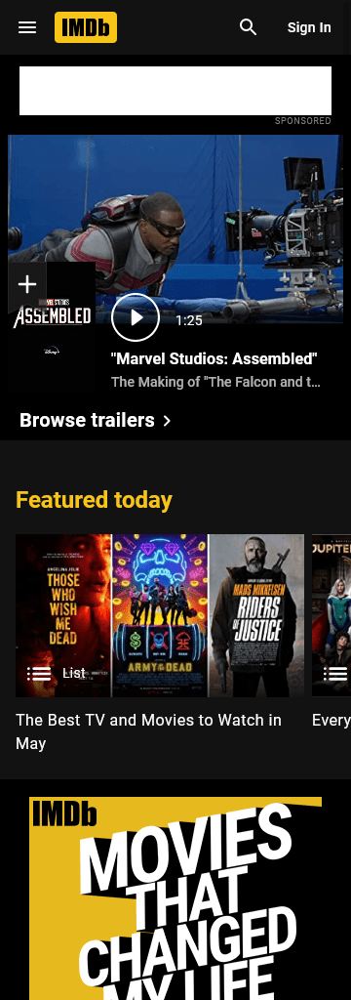

Design Principles Assignment
Elise Christensen
There are many examples of great design throughout the web. For my assignment I decided to focus on these particular principles:
- Visual Hierarchy
- Contrast
- Repetition
Visual Hierarchy
It's hard to tell from the screenshot, but on this site the white text is constantly shifting. The "Where Learning Is..." sentance has the look of something being erased and then re-typed into something new. I thought this was a great example of visual hierarchy because something that changes like that will always be the first thing site visitors see. The designer made a great choice there because it is showing the words that the company wants people to remember them by, things like "Adventurous", "Fun", "Exciting", etc. The next thing a visitor would notice would the big red button that says "View Our Classes". Short and to the point, a great call to action button! In mobile view at least I believe the next item would be the logo, to hopefully help the viewer remember the name of the company.
Contrast
I am rather partial to dark backgrounds on websites. It's easier on my eyes to look at and it makes things stand out, since it isn't often seen. For this site, IMDB, it was a great design choice to help the movie posters stand out, showing an excellent example of contrast in design. The text throughout the site is either white or yellow, and the dark background really helps the content to "pop" on the page.
Repetition
Lynda.com is a site that usees a lot of repetition throughout the site, and I believe it's incorporated really well. You can see the links to different courses have a strong repeated design, each having a nice unique stock photo in the background, but otherwise very similar. There's an overall category heading, then an approximate number of courses, and then a nice big button linking to a preview page. Although you can't really tell in this screenshot, the yellow "Start My Free Month" button is also repeated a lot on the home page, almost after each section. An effective reminder that there is a free trial!